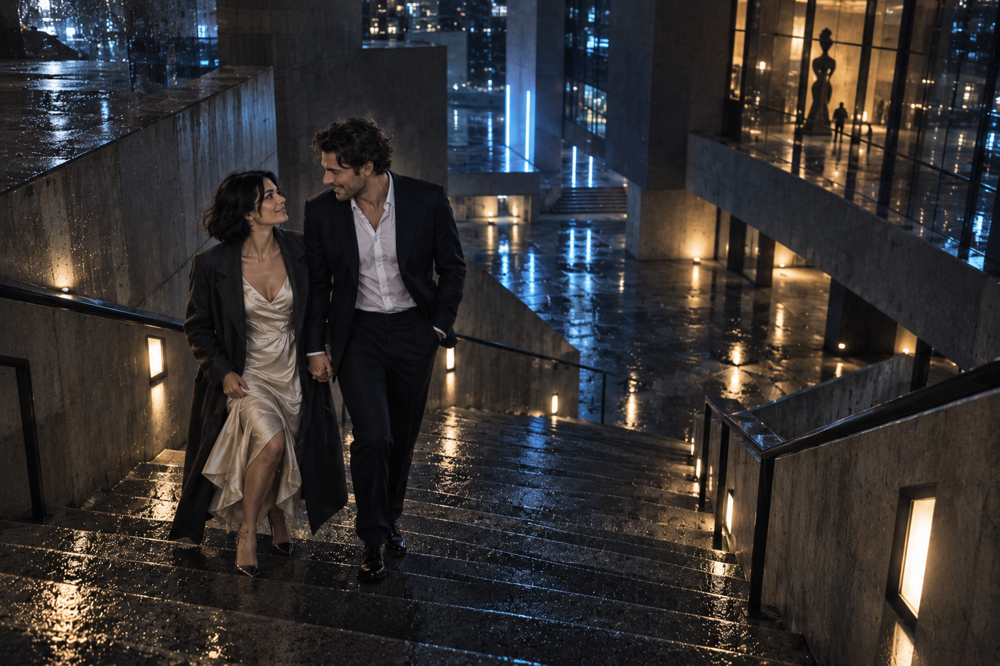

02 / наша историяВсё началось
Всё началось
на последнем
поезде.
Мы возвращались с разных вечеринок, вышли на одной станции и разговорились у мокрой лестницы. Теперь хотим, чтобы наши маршруты пересеклись с вашими.
Алина и Максим